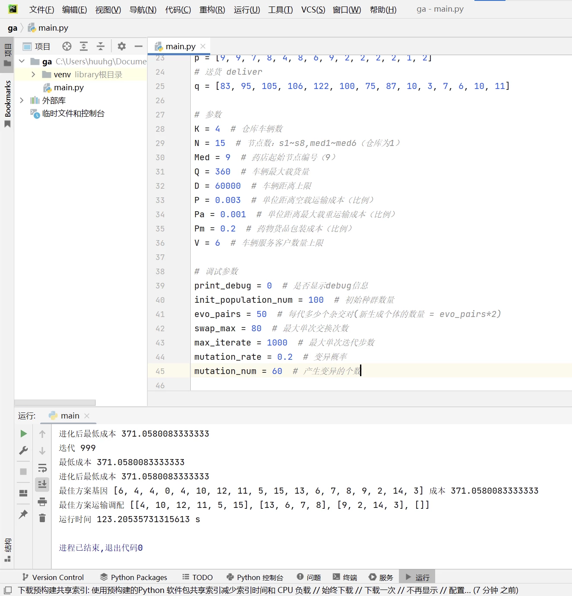

使用Python编写遗传算法

- huuhghhgyg
- 8 min read

算法设计，附源码
概述
当涉及非线性规划问题或者难以在短时间内求得满意解的线性规划问题，可以通过求其近似解（或满意解）而非精确解。使用遗传算法求解近似解所消耗的时间远少于求解精确解，多数时候近似解的效果都可以接受。 遗传算法的优势体现在：在小规模问题上，遗传算法求解得到的通常是精确解；而在大规模问题上，遗传算法通常可以通过较短的时间求得精确解。 
同样的问题通过遗传算法求解近似解和线性规划求解精确解，遗传算法花费的时间显著短于精确算法。
| 算法 | 时长 | 结果(此处结果越小越好） |
|---|---|---|
| 遗传算法 | 123s (2m03s) | 371.06 |
| 精确算法 | 201s (3m21s) | 367.07 |
模型描述
目标函数
$minf=P\sum_{k=1}^K\sum_{i=1}^N\sum_{j=1}^Nx_{kij}d_{ij}+\frac{P_a}{Q}\sum_{i=1}^N\sum_{j=1}^N(y_{ij}+z_{ij})x_{kij}d_{ij}+P_m\sum_{k=1}^K\sum_{i=1}^N\sum_{j=M}^Nx_{kij}q_j$
约束方程
遗传算法设计
经过本次从0开始编写遗传算法求解模型，我将遗传算法划分为几个模块（步骤）
初始可行解的生成
我自认为这个部分写得不太好。如果按照我这个方法生成初始可行解，可能比较需要天时地利。如果模型规模变大可能初始可行解的生成就会很慢，我暂时还没有想到改进的方法，因为约束确实也有点多，只能尽可能在这部分通过算法节约时间。 在我的模型中，初始可行解的生成受到几个约束：
- 客户需要被完全分配。我提供的代码中的分配部分已经有改进的方案（我懒得改了🤣），即使用
Random.shuffle()函数对一个序列进行打乱。如给定序列[1,2,3,4,5,6,7,8]，可以通过这个函数对序列顺序进行打乱再进行切割，达到分组分配的目的。 - 车辆每段送货路径的载重量之和不能超过最大允许载重量。
- 车辆的单个环路（从仓库出发到返回仓库）的里程之和不能超过单台车辆允许行驶的里程上限。
后两个约束属于限制，我的函数在进行检测的过程中如果发现其中任何的路径不符合要求会直接break循环，节约算力和时间。
以下是生成初始可行解的相关代码：
1def item_generate(): # 生成个体
2 w_max = -1
3 s_max = -1
4 nc = N - 1
5 k_num_list = [] # 每辆车服务客户数量如 [4, 2, 3, 5]
6 k_visit_arr = [] # 车辆服务客户顺序列表如 [[12, 11, 14, 3, 6, 13], [9, 4, 7, 2], [5, 8], [10, 15]]
7 k_x_scatter = [] # 每辆车ij的列表如 [[[1,2],[2,3],...],[...],...]; [车[点[,]]]
8
9 while w_max < 0 or s_max < 0 or s_max > D or w_max > Q: # 要求生成的方案满足重量约束和距离约束
10
11 # 生成每辆车要访问的顾客数
12 while nc != 0: # 如果不能完全分配要重新生成
13 # 初始化生成
14 k_num_list = []
15 nc = N - 1
16 # 生成
17 for i in range(K - 1):
18 num = random.randint(0, min(nc, V))
19 nc -= num # 从顾客中删除num个
20 k_num_list.append(num)
21 if nc < V:
22 k_num_list.append(nc)
23 nc = 0
24 k_num_list.sort(reverse=True) # 从大到小排列车辆服务客户数量
25
26 # 根据每辆车服务客户数量生成配送方案
27 [k_visit_arr, k_x_scatter] = generate_d_arr(k_num_list)
28
29 # 检测是否符合载货量要求（见函数）
30 w_max = cal_w_max(k_visit_arr)
31 # for debug
32 if w_max > Q and print_debug:
33 print("超重", w_max)
34
35 # 检测是否符合最远距离要求
36 s_max = cal_s_max(k_x_scatter)
37 if s_max > D and print_debug: # for debug
38 print("超距离", s_max)
39
40 return [k_num_list, k_visit_arr, k_x_scatter]
41
42# 根据每辆车的服务顺序生成配送方案
43def generate_d_arr(k_num_list): # 输入服务顺序，如 [4,2,3,5]
44 # 生成客户列表
45 customers = []
46 for i in range(2, N + 1): # (客户：2~15（14个）)
47 customers.append(i)
48
49 # 生成每辆车服务的顺序和决策点
50 k_visit_arr = [] # 车辆服务客户顺序列表如 [[12, 11, 14, 3, 6, 13], [9, 4, 7, 2], [5, 8], [10, 15]]
51 k_x_scatter = [] # 每辆车ij的列表如 [[[1,2],[2,3],...],[...],...]; [车[点[,]]]
52 for i in range(K):
53 visit_arr = [] # 定义一辆车服务顺序向量
54 x_scatter = [] # 访问点
55 for j in range(k_num_list[i]): # 根据服务数量生成每辆车要服务的客户的顺序
56 # 抽取客户
57 nc_remain = len(customers)
58 c_rand = customers[random.randint(0, nc_remain - 1)] # 随机选中的客户
59 visit_arr.append(c_rand)
60 customers.remove((c_rand)) # 从列表中删除客户
61
62 # 组合决策点x
63 if j == 0: # 第一个
64 x_scatter.append([1, c_rand])
65 else:
66 x_scatter.append([visit_arr[-2], visit_arr[-1]]) # 已经加进去了，所以[-2]，[-1]是最新的
67 if j == (k_num_list[i] - 1): # 如果是最后一个
68 x_scatter.append([c_rand, 1])
69
70 # 添加到列表
71 k_visit_arr.append(visit_arr) # 添加这辆车的访问客户顺序
72 k_x_scatter.append(x_scatter) # 添加这辆车的访问决策点
73
74 return [k_visit_arr, k_x_scatter]
75
76# 输入车辆服务顺序矩阵，计算最大重量是否超标，返回最大重量
77def cal_w_max(k_visit_arr):
78 # 检测是否符合载货量要求
79 w_max = 0
80 for karr in k_visit_arr: # 每辆车
81 q_all = [] # 初始化送货重量
82 p_all = [] # 初始化取货重量
83 # todo: 计算初始运货量的载重 w_sum
84 for id in karr: # 每个客户(id),从2开始（扫描数据）
85 # print(id)
86 q_all.append(q[id - 2]) # 加入指定客户的送货重量（q为向量）
87 p_all.append(p[id - 2]) # 加入指定客户的取货重量
88 w_sum = sum(q_all) # 初始载重量（离开仓库时）
89 w_max = max(w_sum, w_max) # 更新最大值
90
91 if w_max > Q: # 如果此时已经超过最大允许载重量，直接跳出循环，不再计算
92 break
93
94 # todo: 计算每一段路程的载重
95 for i in range(len(karr)): # 0~5 每个节点计算
96 w_sum += (-q_all[i] + p_all[i]) # 更新过程重量
97 w_max = max(w_sum, w_max) # 更新最大值
98
99 return w_max
100
101
102def cal_s_max(k_x_scatter): # 计算路程（最大值）
103 s_max = 0
104 for k in range(K): # 每辆车都计算
105 s = [] # 初始化距离
106 for o in k_x_scatter[k]:
107 if (o != 0):
108 xi = o[0] - 1
109 xj = o[1] - 1
110 s.append(d[xi][xj])
111 s_max = max(sum(s), s_max)
112
113 if s_max > D: # 如果已经超距离
114 break
115 return s_max
模块测试代码：
1[k_num_list, k_visit_arr, k_x_scatter] = item_generate()
2print("最终结果")
3print(k_num_list)
4print(k_visit_arr)
5print(k_x_scatter)
1[k_visit_arr,k_x_scatter] = generate_d_arr([4,2,3,5])
2score = cal_score([[4, 12, 11, 15, 5, 7], [2, 9, 6], [10, 14, 3], [13, 8]])
3print(score)
目标函数的表示
这部分没什么好说的，按照模型里面给定的目标函数编写就是了。下面附上我的目标函数
1# 计算成本
2def cal_score(k_visit_arr):
3 score = 0.0
4 p_w_sums = [] # 每段路径对应的取货量之和
5 q_w_sums = [] # 每段路径运送的送货量之和
6 w_sums = [] # 每段路径的总载重量
7 for nodes in k_visit_arr:
8 p_all = []
9 q_all = []
10 w_all = []
11
12 for node in nodes:
13 p_all.append(p[node - 2]) # 从向量中获取取货数值，刨除仓库占1，再考虑从0开始
14 q_all.append(q[node - 2]) # 从向量中获取送货数值，同上
15
16 p_w_sum = []
17 q_w_sum = []
18 for i in range(len(nodes)): # 全路程取送货量计算（从仓库出发到回到仓库）
19 p_w_sum.append(sum(p_all[:i + 1]))
20 q_w_sum.append(sum(q_all[i:]))
21
22 if len(q_w_sum) != 0:
23 w_all.append(q_w_sum[0]) # 运往第一个节点
24 for i in range(0, len(nodes) - 1):
25 w_all.append(p_w_sum[i] + q_w_sum[i + 1])
26 w_all.append(p_w_sum[-1])
27
28 p_w_sums.append(p_w_sum)
29 q_w_sums.append(q_w_sum)
30 w_sums.append(w_all)
31
32 k_x_scatter = get_scatter(k_visit_arr) # 获取散点集合
33 for y in range(len(k_x_scatter)):
34 for z in range(len(k_x_scatter[y])):
35 # 转化为下标索引
36 i = k_x_scatter[y][z][0] - 1
37 j = k_x_scatter[y][z][1] - 1
38 score += P * d[i][j]
39 score += w_sums[y][z] * d[i][j] * Pa / Q
40
41 score += Pm * sum(q[Med - 1:]) # 配送药店药物额外加固费用
42
43 return score
在我的模型中，k_visit_arr是访问的客户的编号的向量。函数测试代码如下：
1print(cal_score([13,6,7,8,3,14,2,9,15,5,11,12,10,4]))
基因序列的设计和交叉方式
基因序列的设计
基因编码：5, 5, 4, 0, 4, 10, 12, 11, 5, 9, 2, 3, 14, 15, 13, 6, 7, 8
在我的模型中，由于车辆数为4，设定前4位分别为每辆车服务的客户数量。 后14位客户的服务顺序，根据车辆服务客户的数量依次分配。交叉时不切断前四位，保证交换后的方案在一定程度上的可行。
基因相关代码：
1def get_gene(k_num_list, k_visit_arr): # 获取基因(K+(N-1))；前K位为形状，后N-1位为顺序
2 gene = copy.deepcopy(k_num_list)
3 for items in k_visit_arr:
4 for item in items:
5 gene.append(item)
6 return gene
7
8
9def grow(gene): # 根据基因恢复
10 structure = gene[:4] # 切割位置在4位末尾
11 content = gene[4:]
12 adult = [] # 声明恢复目标
13 for num in structure:
14 arr = [] # 每辆车的服务顺序
15 i = 0 # 声明切割点
16 for i in range(num):
17 arr.append(content[i])
18 content = content[i + 1:]
19 adult.append(arr)
20
21 return [structure, adult] # 返回结构和内容
模块测试代码
1print(get_gene([5, 5, 2, 2],[[13, 9, 2, 6, 14], [15, 8, 12, 4, 11], [5, 7], [3, 10]]))
2
3print(grow([5, 5, 2, 2, 13, 9, 2, 6, 14, 15, 8, 12, 4, 11, 5, 7, 3, 10]))
交叉方法
一对基因交叉会产生两个新的序列。
- 先从4位后确定交换片段的长度，基因交叉时在4位后随机选取位点。
- 先插入0（无意义，原序列也不存在），再删除基因4位后中存在的即将要插入片段中包括的所有数值。
- 将片段插入到基因中，最后删除0，得到可用的基因。
这种交叉方式在一定程度上保留了访问客户的顺序，相比直接交叉避免了客户被重复服务或者被漏掉的情况。
交叉相关代码：
1def cross(item1, item2): # 交叉
2 structures = [item1[:4], item2[:4]] # 储存结构
3 gene_1 = item1[4:]
4 gene_2 = item2[4:]
5
6 swap_len = random.randint(1, int(len(gene_1) / 2)) # 交换长度
7 sec_p = random.randint(0, len(gene_1) - swap_len) # 截取位点
8 insert_p = random.randint(0, len(gene_1)) # 插入位点
9
10 sections = [gene_1[sec_p:sec_p + swap_len], gene_2[sec_p:sec_p + swap_len]] # 截取的交换片段
11
12 genes_s = [gene_1[:], gene_2[:]] # 要返回的基因
13
14 for i in range(2):
15 genes_s[i].insert(insert_p, 0) # 插入的0无意义，只是一个标记
16
17 for sec in sections[i]:
18 genes_s[i].remove(sec)
19 tag = genes_s[i].index(0) # 0的标记位点
20
21 for j in range(swap_len):
22 genes_s[i].insert(tag + j, sections[i][j])
23 genes_s[i].remove(0) # 移除标记位点
24
25 for i in range(K):
26 genes_s[0].insert(i, structures[0][i])
27 genes_s[1].insert(i, structures[1][i])
28 return genes_s
模块测试代码：
1print(cross([6, 6, 1, 1, 7, 15, 5, 11, 6, 13, 3, 14, 12, 10, 4, 9, 2, 8],[6, 4, 3, 1, 13, 14, 11, 5, 3, 15, 6, 7, 8, 12, 4, 9, 2, 10]))
种群管理
生成初始种群
生成初始种群时通过之前的item_generate()生成个体函数生成可行个体，再通过cal_score()函数计算个体的分数，通过get_gene()函数获取个体对应的基因。最终按照个体的分数进行从小到大排序。
代码如下：
1def init_gen(): # 初始种群
2 population = [] # 声明初始种群
3
4 for index in range(init_population_num):
5 [k_num_list, k_visit_arr, k_x_scatter] = item_generate()
6
7 score = cal_score(k_visit_arr)
8 gene = get_gene(k_num_list, k_visit_arr)
9 population.append([score, gene])
10 population.sort() # 此处排序为分数从小到大
11
12 print("已生成初始种群并完成排序")
13 return population # 返回种群：[[分数,基因],...]
种群的迭代
种群迭代需要考虑变异，根据分数得到每个个体的选取概率，从个体中抽取进行交叉。整体大致的算法流程为：
- 生成初始种群。
- 将初始种群迭代：根据适应度计算每个个体被选择的概率并随机抽取一定的个体进行交叉（轮盘赌），按照变异概率发生变异，得到本次迭代后种群中的最优值。如果交叉一直失败，达到交叉失败次数的上限，则放弃继续交叉，使用新生成个体弥补。
- 如果迭代过程中一直维持一个最优值不变，且到达迭代步数上限，则停止迭代。否则迭代步数清零，重新计算迭代步数。
代码如下：
1def evolution(population):
2
3 if random.random() < mutation_rate: # 触发变异
4 print("触发变异")
5 for i in range(mutation_num):
6 [k_num_list, k_visit_arr, _] = item_generate()
7 gene = get_gene(k_num_list, k_visit_arr)
8 score = cal_score(k_visit_arr)
9 population.append([score, gene])
10
11 # 统计分数
12 scores = []
13 for item in population:
14 scores.append(item[0])
15 min_score = min(scores) # 最低成本统计
16 print("最低成本", min_score)
17
18 # 计算比例
19 proportion = [] # 比例（累计）
20 proportion_sum = 0
21 score_max = max(scores) # 得到成本最高值
22 adjusted_scores = []
23
24 for score in scores: # 预处理
25 adjusted_scores.append((score_max - score + 20))
26
27 scores_sum = sum(adjusted_scores)
28 for score in adjusted_scores:
29 proportion_sum += score / scores_sum
30 proportion.append(proportion_sum)
31
32 selected_population = [] # 随机抽取的个体
33 bests_selected = [] # 用于交叉的好的个体（不是了， 也改成了随机个体）
34 pairs = evo_pairs # 新增对数
35 for i in range(pairs): # 根据需要添加的个体数，抽取交换的一对
36 r = random.random()
37 for j in range(len(proportion)):
38 if r < proportion[j]:
39 selected_population.append(population[j][1]) # 添加随机抽取的个体基因
40 break
41 for j in range(len(proportion)):
42 if r < proportion[j]:
43 bests_selected.append(population[j][1]) # 添加随机抽取的个体基因
44 break
45
46 for i in range(len(bests_selected)): # 交叉后结果
47 passed_gene = []
48 count = 0
49 while len(passed_gene) < 2 and count < swap_max: # 合格的基因个数不够，且在交叉尝试的范围内
50
51 genes = cross(bests_selected[i], selected_population[i])
52
53 # 获取基本信息
54 k_visit_arrs = [get_visit_arr_by_gene(genes[0]), get_visit_arr_by_gene(genes[1])]
55
56 k_x_scatters = [get_scatter(k_visit_arrs[0]), get_scatter(k_visit_arrs[1])]
57 # 检验是否可行
58 w_maxs = [cal_w_max(k_visit_arrs[0]), cal_w_max(k_visit_arrs[1])]
59 s_maxs = [cal_s_max(k_x_scatters[0]), cal_s_max(k_x_scatters[1])]
60
61 for j in range(2):
62 if w_maxs[j] <= Q and s_maxs[j] <= D: # 符合要求
63 passed_gene.append(genes[j]) # 添加到合格的基因
64
65 if len(passed_gene) < 2: # 没交叉出来
66 gene_remain = 2 - len(passed_gene) # 剩余多少个达到标准
67 for r in range(gene_remain):
68 [k_num_list, k_visit_arr, _] = item_generate()
69 passed_gene.append(get_gene(k_num_list, k_visit_arr))
70
71 scores = [cal_score(get_visit_arr_by_gene(passed_gene[0])),
72 cal_score(get_visit_arr_by_gene(passed_gene[0]))] # 只取前两个
73 population.append([scores[0], passed_gene[0]])
74 population.append([scores[1], passed_gene[1]])
75
76 # for debug
77 scores = []
78 for item in population:
79 scores.append(item[0])
80 min_score = min(scores) # 最高分统计
81 print("进化后最低成本", min_score)
82
83 population.sort() # 排序
84 population = population[:init_population_num] # 将数量调整回初始种群数量
85 return [min_score, population]
遗传算法参数设置
调试参数设置如下：
1# 调试参数
2print_debug = 0 # 是否显示debug信息
3init_population_num = 100 # 初始种群数量
4evo_pairs = 50 # 每代多少个杂交对(新生成个体的数量 = evo_pairs*2)
5swap_max = 80 # 最大单次交换次数
6max_iterate = 1000 # 最大单次迭代步数
7mutation_rate = 0.2 # 变异概率
8mutation_num = 60 # 产生变异的个数
初始种群：随机生成含有 100 个可行个体的初始种群。 杂交：每次迭代的时候根据适应度计算的概率随机抽取 50 对个体进行杂交，杂交出另 50 对个体（100 个个体）。 单次交换：杂交可能失败，最多允许尝试 80 次，否则使用随机生成的个体补充。 单次迭代：如果最优值在迭代 1000 次后都没有发生变化，则停止迭代，输出结果。 变异：变异概率设置为 0.2，如果发生变异产生 60 个可行的变异个体。